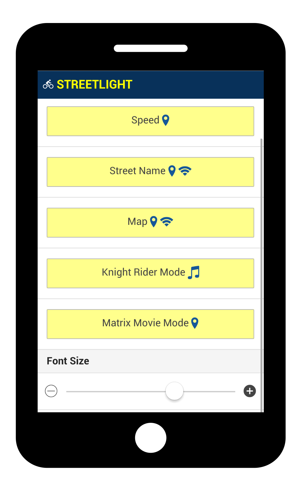

Streetlight is smartphone app to enhance your night bicycle ride.
Streetlight Mods
Icons near each mod tell you which smartphone features are required to use the mod (e.g., internet, gps).- Speed – Your actual speed. Scroll down the main menu to switch from metric to imperial units.
- Streetname – Name of the street you are currently driving through. Use to learn streetnames of your city.
- Grid – Lumigrids-like effect to avoid holes in roads.
- Map – Map of your neighborhood.
- Knight Rider Mode – Tribute to K.I.T.T. car light.
- Matrix Mode – Tribute to the Matrix movie. The faster you move, the faster the green glyphs move too.
Begin with Three Steps
- Get Cardboard Smartphone Projector from eBay or Amazon
and mount it on bicycle handlebars.
- Launch Streetlight app on your smartphone, choose one of the mods and insert your smartphone into the Cardboard Projector.
- Enjoy your ride.
Warning: You are strongly advised to use regular bicycle front+rear light along with Streetlight app to be properly visible in night traffic.
Help, Questions, Suggestions
Please submit your question/suggestion/bug report into github issues. If you want to write an email see email address at the bottom of this page.
Add Your Own Mod or Run on Other Smartphone Platform
Streetlight source code is hosted on github. The application is written in Ionic framework which is cross plaftorm—anyone familiar with JavaScript should be able to add his own mod or launch the app on other mobile platform.
Acknowledgements
- Mobile app is build in Ionic framework with help of AngularJS and Apache Cordova
- Map data is provided by openstreetmap.org
- Map is embedded into app using Leaflet
- Map layout is Stamen Toner
- Page generated by Github Pages using modified Cayman Theme